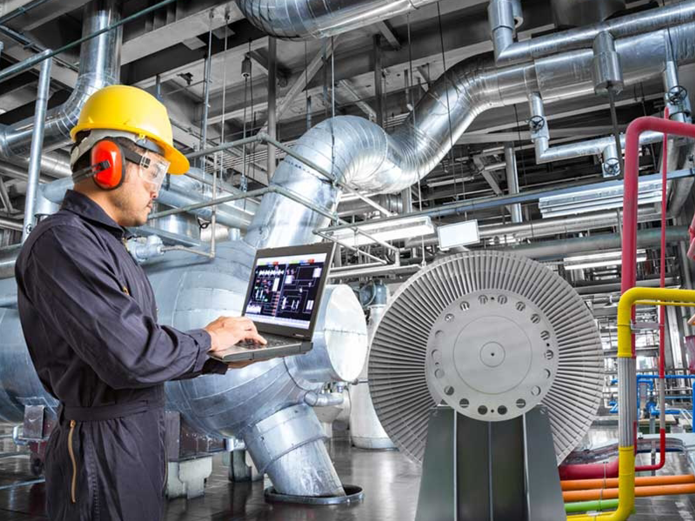
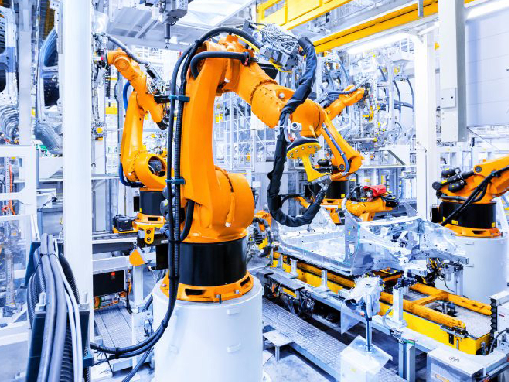
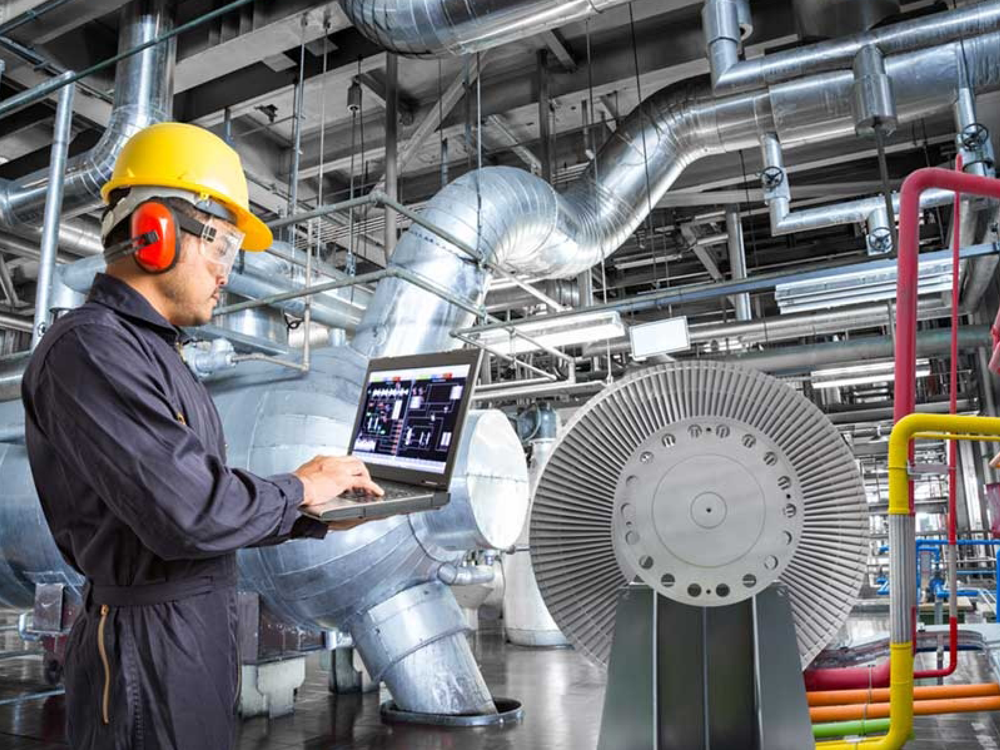
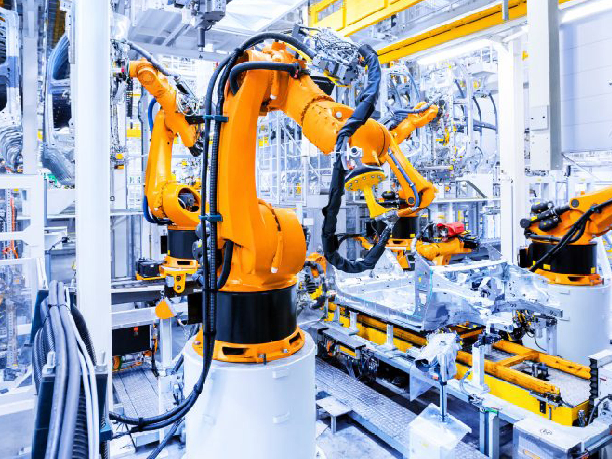

BSc in Industrial Engineering
Why study a BSc in Industrial Engineering (IE) at The British University in Dubai?
Preparing for the upcoming Fourth Industrial Revolution requires engineers with a different mind-set to much traditional engineering. A new breed of engineers is needed, one that is knowledgeable in the fields of manufacturing techniques & strategies, multiple levels of control & automation systems, robotics & Artificial Intelligence (AI), supply chain arrangements & optimisation, and economic analysis all the while ensuring workers’ safety as well as enhancing users’ experiences (ergonomics). This is the role of an Industrial Engineer. An Industrial Engineer can apply his/her knowledge in a wide range of public and private industries such as extraction & processing of natural resources, manufacturing facilities, supply & delivery services, transportation, major infrastructure services, and control & operation of facilities. In a world characterised by fast-paced developments and innovations, organisations require “lean” professionals that are able to understand, appreciate and act on new opportunities.
 



Programme description
An Industrial Engineer is tasked with implementing the latest technological developments (physical and digital), the optimisation of available resources (physical and human), reducing waste (physical resources and time), enhancing productivity (quantity and quality), and increasing profitability (reducing costs and enhancing added value). An Industrial Engineer strikes the right balance between knowledge in a range of relevant engineering disciplines as well as financial and human resources management skills. This is why Industrial Engineers have an important role in the sustainability and future success of most organisations and are expected to be in high demand in years to come. Our Industrial Engineering BSc programme is meticulously designed to produce such well-rounded Industrial Engineering graduates that can work across a wide range of industries.
Career prospects
The different attributes of Industrial Engineering are an integral part of the structure and functionality of many operations, systems and institutions. The world demand for goods and services is increasing at a very high rate. The combination of increased population numbers and higher standards of living is placing a heavy burden on our planet. Earth is ailing under this pressure, which is being manifested in the form of depletion of resources and increased pollution. That is why every business is aiming to optimise its operations, supply chain, resource procurement, and waste generation. This is the case for large scale industries such as oil & gas, electricity, water & waste water, transportation, manufacturing, infrastructure development, health, hospitality, and so on. Small and medium size organisations also need to adopt such practices if they are to survive and thrive in a highly connected and competitive world. Such organisations are in need of well-rounded employees that can contribute to both engineering requirements and resources management. Thus, the potential career opportunities of an Industrial Engineer are vast and are expected to continue to grow for the foreseeable future. Graduating with our BSc in Industrial Engineering degree is the first step in building your professional Industrial Engineering career.
Course Structure